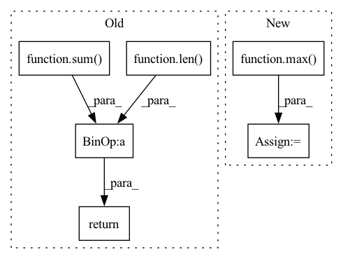

Pattern ID :1616
Before Change
reference_corpus = generate_corpus[:idx] + generate_corpus[idx+1:]
self_bleu_score.append(sentence_bleu(reference_corpus, candidate, weights,
smoothing_function=SmoothingFunction().method1))
return sum( self_bleu_score) / len( self_bleu_score)
Function name and function mapper.
Useful when we have to serialize evaluation metric namesAfter Change
return results
def self_bleu_(generate_corpus, n_grams, reference_corpus=None):
weight = [0] * max( n_grams)
weights = {}
for n_gram in n_grams:
weight[n_gram - 1] = 1.0
weights[n_gram] = tuple(weight)
weight[n_gram - 1] = 0.0
bleu = SelfBLEU(generate_corpus, weights)
scores = bleu.get_score()
results = []
for n_gram in n_grams:
score = np.array(scores[n_gram])
results.append(score.mean())
return results
In pattern: SUPERPATTERN
Frequency: 3
Non-data size: 6
Instances Fragment ID: 7442688
Project Name: rucaibox/textbox
Commit Name: 74995b26ad538f821707a331a83f34c8559f1ed8
Time: 2020-12-03
Author: 1020139164@qq.com
File Name: textbox/evaluator/metrics.py
M Class Name: AnonimousClass
N Class Name: AnonimousClass
M Method Name: self_bleu_(3)
N Method Name: self_bleu_(3)
M Parent Class:
N Parent Class:
M File Name: textbox/evaluator/metrics.py
N File Name: textbox/evaluator/metrics.py
M Start Line: 29
M End Line: 38
N Start Line: 40
N End Line: 54
Before Change
for candidate in generate_corpus:
bleu_score.append(sentence_bleu(reference_corpus, candidate, weights,
smoothing_function=SmoothingFunction().method1))
return sum( bleu_score) / len( bleu_score)
def self_bleu_(generate_corpus, n_gram, reference_corpus=None):
weights = [0, 0, 0, 0, 0]After Change
def bleu_(generate_corpus, reference_corpus, n_grams):
weight = [0] * max( n_grams)
weights = {}
for n_gram in n_grams:
weight[n_gram - 1] = 1.0
weights[n_gram] = tuple(weight)
weight[n_gram - 1] = 0.0
bleu = BLEU(reference_corpus, weights) Fragment ID: 7442674
Project Name: rucaibox/textbox
Commit Name: 74995b26ad538f821707a331a83f34c8559f1ed8
Time: 2020-12-03
Author: 1020139164@qq.com
File Name: textbox/evaluator/metrics.py
M Class Name: AnonimousClass
N Class Name: AnonimousClass
M Method Name: bleu_(3)
N Method Name: bleu_(3)
M Parent Class:
N Parent Class:
M File Name: textbox/evaluator/metrics.py
N File Name: textbox/evaluator/metrics.py
M Start Line: 18
M End Line: 25
N Start Line: 23
N End Line: 37
Before Change
@staticmethod
def avg_time(times):
max_v = max(times)
total = sum( [t for t in times if t < max_v])
return total / (len( times) - 1)
def should_profile(self, node, function, args, kwargs, output=None):
if node.type not in [NodeTypes.LAYER, NodeTypes.OP]:After Change
def avg_time(times):
vs = times
max_v = max( vs)
vs = [t for t in times if t < max_v]
max_v = max(vs)
vs = [t for t in times if t < max_v]
Fragment ID: 7442679
Project Name: saareliad/ftpipe
Commit Name: 176d4999fb3e411ff56dc79d6aee44e7d2df6572
Time: 2020-07-26
Author: saareliad@campus.technion.ac.il
File Name: pytorch_Gpipe/model_profiling/profiler.py
M Class Name: GraphProfiler
N Class Name: GraphProfiler
M Method Name: avg_time(1)
N Method Name: avg_time(1)
M Parent Class:
N Parent Class:
M File Name: pytorch_Gpipe/model_profiling/profiler.py
N File Name: pytorch_Gpipe/model_profiling/profiler.py
M Start Line: 180
M End Line: 182
N Start Line: 181
N End Line: 189